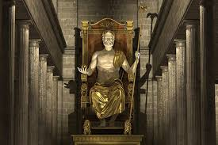

يُعد ما يُعرف بتمثال زيوس أحد عجائب الدنيا السبع القديمة، وقد تم بناؤه كتكريم للإله زيوس على يد النحات اليوناني فيدياس وفريق من المعاونين له، وذلك في العام 432 قبل الميلاد في مدينة أوليمبيا اليونانية، كما تمّ نحته في أحد المعابد اليونانية ليبلغ ارتفاعه 12م تقريباً على قاعدة خشبية كبيرة، وقد شكّلت مادتا الذهب والعاج جسم التمثال الذي كان يحمل بيده اليسرى صولجاناً مُرصّعاً بكافة أشكال المعادن، وبيده اليُمنى تمثالاً صغيراً لآلهة النصر الإغريقية التي تحمل اسم نايك، أما العرش الذي يجلس عليه فهو مصنوعٌ من مزيج من الأحجار الكريمة، والذهب، وخشب الأبنوس
يعود تاريخ بناء هيكل آرتميس أحد عجائب الدنيا السبع القديمة إلى القرن السادس قبل الميلاد، وتحديداً في العصر الهلنستي، وعلى الرغم من أن بقاياه تشكّل حالياً مجرد بقايا الأساس الذي قام المعبد عليه في مدينة إفسوس التي تقع في تركيا، إلا أن متحف لندن البريطاني يحتوي في معارضة على بعض من بقايا هذا الصرح، وقد صُنع هيكل أرتيمس بشكل كامل من الرخام واحتوى على العديد من الأعمدة الضخمة، فضلاً عن تلك المحيطة به والتي بلغ عددها 36 عموداً، كما تم إعادة بنائه مرات عديدة، كان أولها في القرن الثاني قبل الميلا